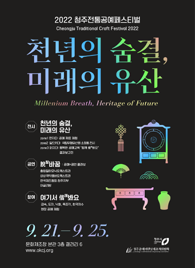

전통공예페스티벌
2022 전통공예페스티벌
천년을 이어온 선인들의 고귀한 장인정신을 계승하고, 미래 세대에게 아름다운 유산으로 전합니다.
천년의 숨결, 미래의 유산Millenium Breath, Heritage of Future
행사기간9월 21일(수) ~ 25일(일) / 5일간, 오전 10시 ~ 오후 7시
행사장소문화제조창 본관 3층 (청주시한국공예관 갤러리 6) 및 온라인
행사주제천년을 이어온 선인들의 고귀한 장인정신과 공예의 혼을 계승하고, 이를 창의적인 감각으로 발전시켜
동시대에 현대적 가치를 발현하며 미래 세대에게 아름다운 유산으로 전하고자 합니다.
행사내용
1. 전시 '천년의 숨결, 미래의 유산'
2. 공연 '脫(탈)바꿈'
3. 참여 '여기서-偕(해)봐요'
4. 연계행사

천년의 숨결, 미래의 유산
국립무형유산원 전승공예품 30~50점 및 전통공예 재료 체험 전시, 교육 프로그램 결과물 등 전시합니다.
공예가에게 주어진 환경, 재료를 바탕으로 창작된 공예품을 통해 당시의 생활상과 사회 환경 등 문화적 의미를 발견해 보는 계기가 되고자 합니다.
-
Zone 1 만지다
공예 재료 체험 - 공예 재료를 직접 만지며, 촉감 체험을 하는 전시입니다.
-
Zone 2 일으키다
사랑채와 안채를 재현한 공간에서 만나는 국가지정무형문화재의 전승공예품입니다.
-
Zone 3 퍼지다
청주, 보은, 진천 등 충북에서 진행 된 공예 교육 프로그램 결과물의 전시입니다.
脫(탈)바꿈 : 공예와 공연 만남
공예가의 창조가 시작되는 창작 공간에서 진행되는 콜라보 공연으로 지역 공예가와 공연단체의 색다른 만남을 통해 공예를 청각으로 즐기실 수 있습니다.
* 현장 공연(1회, 행사기간 내), 온라인 공연 감상 (청주공예비엔날레 공식 유튜브)
- 공예가김영조 공연단체충청필하모닉
- 공예가하명석 공연단체상상국악챔버
- 공예가소순주 공연단체한국재즈협회
- 공예가김기종 공연단체어글리밤